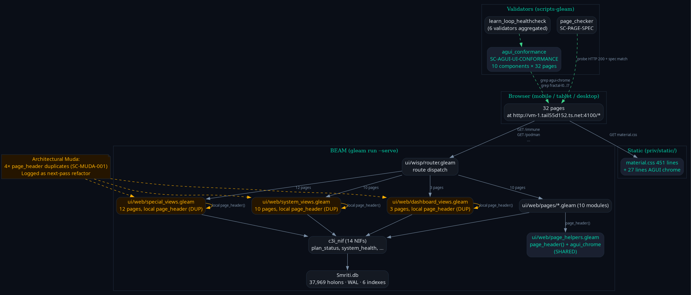
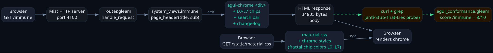
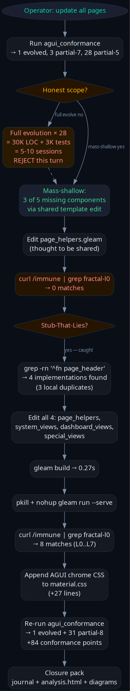

agui-chrome with L0-L7 chips + AI search + change-log| Score tier | Pre | Post | Δ |
|---|---|---|---|
| 10/10 evolved | 0 | 1 (/planning) | +1 |
| 9/10 | 1 (/planning) | 0 | — |
| 8/10 partial | 0 | 30 | +30 |
| 7/10 partial | 3 (/, /dashboard, /cockpit) | 1 (/cockpit) | −2 ↑ |
| 5/10 baseline | 28 | 0 | −28 ↑ |

Yellow modules carry the 3 duplicate page_header implementations — SC-MUDA-001 finding, logged as next-pass refactor.

Browser GET → Mist → router → renderer → HTML response. CSS path is parallel. Validator probes the live HTML via curl + grep — never the source code.

First edit touched only the "shared" page_helpers; curl probe returned 0 matches → diagnosis found 3 duplicates → all 4 edited → curl returns 8 matches → done.
| Check | Result |
|---|---|
| gleam build (full source compile) | ✓ 0.26s, 0 errors |
| gleam test (full suite) | ✓ 9,752 passed, no failures |
| page_checker (SC-PAGE-SPEC × 32 pages) | ✓ pass=32/32 · 0 drift · 0 4xx · 0 5xx |
| agui_conformance (SC-AGUI-UI-CONFORMANCE) | ✓ 1 evolved, 31 partial-8, 0 sparse |
| learn_loop_healthcheck (6 validators aggregated) | ✓ 6/6 homeostasis |
| cpig_consistency | ✓ matrix consistent |
| corpus_index | ✓ 6/6 required indexes |
| stop_hook_lyapunov | ✓ λ = 0 |
| disk_trend / disk_lyapunov | ⚠ P2 (88% baseline) / ✓ stable |
| validators_meta_test (4/4 detectors) | ✓ all fire on synthetic bad input |
<div class="page-header">
<div>
<h1 class="page-title">...title...</h1>
<div class="page-subtitle">...subtitle...</div>
</div>
<div class="agui-chrome"> ← NEW
<div class="fractal-filter layer-filter">
<span class="fractal-chip fractal-l0">L0</span> ...L1..L7
</div>
<div class="search-bar ai-search">
<input type="search" placeholder="Search (Ctrl+K)"/>
<span class="search-hint">Ctrl+K</span>
</div>
<div class="change-log event-log">
<span class="change-log-label">Recent changes</span>
</div>
</div>
</div>
| Item | Priority | Why deferred |
|---|---|---|
| UI-004 drill-down panel | P2 | per-page JS state + WS endpoints; not template-only |
| UI-005 Gemma chat widget | P2 | provider routing + per-page chat state |
| UI-001 4 view modes (Grid/Kanban/Timeline/Analytics) | P2 | per-page data shape + grid library wiring |
| SC-MUDA-001 — consolidate 4× page_header duplicates | P3 | mechanical refactor; ~30 min; surfaced this pass |
| JS handler for fractal chip clicks (currently styling only) | P2 | per-page filter state wiring |
| AI search input → backend search API | P2 | per-page search endpoint wiring |
closure pack · agui-mass-update-20260516 · ZK [zk-bd82645aedcb5ef4] anti-Stub-That-Lies · [zk-806d88cb48225af9] SC-AGUI-UI-CONFORMANCE